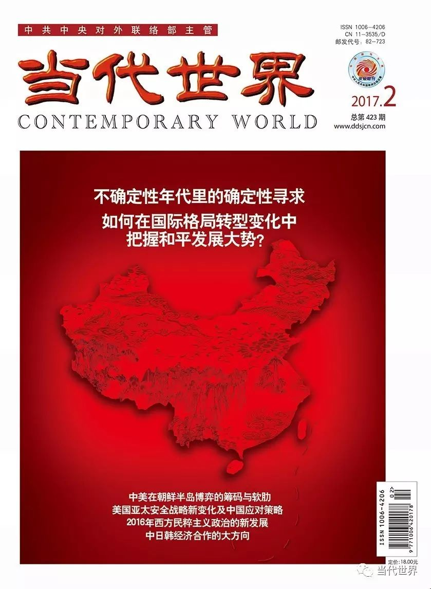

收录于合集
以下文章来源于当代世界 ，作者张景全
当代世界 .
《当代世界》杂志是中共中央对外联络部主管的国政类核心期刊，是深入阐释中央外交方针政策的重要理论阵地；是宣介中国特色大国外交特别是党的对外工作创新成果的权威传播载体；是深入研析世界形势、政党政治、国际格局发展变化和变革规律的专业智力汇聚场。

导语
随着共和党候选人特朗普当选美国新一任总统，当前及未来一段时期，美国亚太安全战略将在概念上继续由“亚太”向“印亚太”转变，在军事上将更加凸显科技的力量，在安全结构上将继续向多边化演变，在区域上将更加侧重东北亚。面对这种变化趋向，中国应进一步厘清主次矛盾，理性认识美国亚太安全战略变化的防御性本质，积极构建于中国有利的话语和认知，逐步扩大友好合作的朋友圈。
张景全 吉林大学东北亚研究院教授，博士生导师
原文刊发于《当代世界》2017年第2期
随着美国国内政治与亚太区域形势的演化，尤其是共和党候选人唐纳德•特朗普当选新一任美国总统，美国亚太安全战略在当前及未来将继续发生新的变化。这些变化主要体现在：亚太安全战略在地域空间概念上拓展为“印—亚—太”，在军事上更加凸显科技的力量，在安全结构上走向多边化，在侧重区域上更加关注东北亚。这些新变化成为中国安全最大的外部性因素，我国需要及时制定应对之策。
01
地域空间概念上继续由“亚太”向“印—亚—太”转变
尽管目前大多数人预期特朗普政府会在亚太进行战略收缩，但笔者认为美国亚太安全战略的地域概念还会继续向“印—亚—太”拓展，其亚太安全战略不会收缩。
其一，“印—亚—太”概念得到了美国军方的支持，尽管新政府在人员构成上发生了巨大变化，但军事人员并未随新政府人员的变化而发生大变化。 从特朗普内阁的组成来看，其“军政府”色彩浓厚。值得注意的是，美军太平洋司令部是“印—亚—太”概念的重要支持者并频繁使用这一概念。特朗普当选美国总统后，美军太平洋司令部司令哈利•哈里斯（NavyAdm.HarryB.HarrisJr.）于2016年11月15日表示，“印—亚—太”地区是对美国未来最为重要的地区。另外，尽管特朗普会加强中东反恐，但是，美实施对中东等地区的反恐行动也会需要美军太平洋司令部所辖力量的策应与支持，“印—亚—太”概念会继续体现在美国对外政策和行动中。
其二，“印—亚—太”地域概念已经伴随美印关系的提升而有了具体内涵。 这既体现在战略层面，也体现在战术层面。在战略层面，美国的亚太再平衡战略与印度的东向行动战略对接。2016年2月23日，哈利•哈里斯在参议院军事委员会进行陈词，他表示对迅速增长的美印关系尤其满意，“作为两个最大的民主国家，我们对整个地区更大的安全与繁荣具有独特的影响”，“当美国向西的‘印—亚—太’再平衡与印度实施东向行动政策（ActEastpolicy）相遇时，两个具有前瞻性的政策相得益彰”。在战术上，2016年美印达成了《国防技术与贸易倡议》，在该倡议中，“美国已经同意将与印度的国防贸易与技术分享提升至相当于美国盟友与伙伴的水平”。同年，美印达成《后勤交流协定备忘录》，该备忘录规定美印可以使用对方的海陆空等军事基地进行维修、补给和休整等后勤作业。目前在亚太地区，美国一般只能在同盟国设置或使用基地。
其三，特朗普在增加国防预算以及建造更多海军舰艇计划方面与军方意见是一致的。 美海军要将战斗舰艇从目前200余艘的规模提升至300余艘的规模，这一计划得到了特朗普的支持。此外，特朗普还强调要兑现自己的扩军承诺，在其任期内将增加军费2500—3000亿美元。美国军方更具雄心的“印—亚—太”概念与特朗普的“让美国重新强大”的执政理念也是契合的。
2
军事上更加凸显科技的力量
大选期间特朗普与硅谷之间相互攻击，于是便出现这样一种观点，认为美国新政府的亚太安全战略在军事上不会再依赖硅谷，从而会减弱“第三次抵消战略”。笔者认为，美国在军事上会更加依赖科技的作用。
2014年末，美国国防部提出执行“第三次抵消战略”，即以科技上的创新与突破来抵消对手积累起来的力量。“第三次抵消战略”的特点是，不仅仅依赖官方的科研力量，而且利用民间与盟友的科技力量。美国国防部已经与日本经济产业省以及文部科学省展开谈判。2016年3月10日，美国参谋长联席会议副主席保罗•塞尔瓦（AirForceGen.PaulJ.Selva）在一个年度国防项目会议上表示，美国通过“第三次抵消战略”来应对俄国和中国的威胁。
美国军方在军事上提升科技力量以维持美国优势的战略意图，与特朗普对美国在传统军事领域衰落的批评是互补的。另外，特朗普批评的主要是针对信息技术以及信息技术的国内安全，对于其他高科技领域以及信息技术的国际安全，丝毫没有涉及，而这无疑会确保以硅谷为代表的科技力量继续介入特朗普的对外安全战略。一个值得注意的现象是，2016年12月14日，在竞选中获胜的特朗普主动召开了与美国高科技企业领袖的座谈会，这也在侧面反映了特朗普对科技力量的重视。
3
安全结构上走向多边化
长期以来，美国在亚太的安全结构一直高度依赖双边结构的同盟体系。然而，在美国新政府的运行之下，人们将看到一个走向多边的安全结构。
第一，美国政府一直努力在双边同盟的基础上构建三边同盟。 目前，美日韩三边同盟、美日澳三边同盟已经显现化。美日韩、美日澳不仅建立了三边对话机制，而且在情报、军事等领域展开务实合作。2016年11月23日，日韩签署《军事情报保护协定》，为补齐美日韩三边的日韩短板迈出了关键性的一步。近年，美日澳更是不断举行三边军事演习；随着菲律宾内政变化而导致美国在东南亚的重要抓手美菲同盟弱化，美国对美日澳的依赖会增加。美日韩、美日澳三边关系一般依托更广泛的地区多边机制展开，每一个三边都存在不同的议题与侧重，美日韩小三角针对东北亚，美日澳大三角针对东亚、南亚及中东。
第二，双重“特朗普冲击”将促使亚太盟友寻找新的合作伙伴和同盟组合。 其中，一个“冲击”是，特朗普对“亚太再平衡”不以为然，再平衡作为概念在今后的使用频率会降低，美国的盟友对美国的同盟承诺会产生疑虑甚至动摇；另一个“冲击”是特朗普版的美国核政策。特朗普版的美国核政策涉及两个方面，一方面是对核的战略容忍，特朗普纵容日韩拥核的言论，既可能刺激美国盟友的核野心，同时也可能引发美国盟友对美国核保护的担心。而众所周知，美日、美韩同盟存在的一个重要条件就是美国对日韩提供持续与可信的核保护，特朗普所引发的“核猜想”可能会动摇同盟。另一方面，美国可能会进行核前沿部署。面对朝鲜核试验的持续升级和中俄力量的持续提升，美国可能会将核武器直接部署到朝鲜边境，从过去的传统力量前沿部署改为战略力量前沿部署。无疑，这都会严重冲击冷战结束以来依赖传统核态势所形成的安全结构。
13
区域上将更加侧重东北亚
鉴于特朗普的从政经验较少与从商历程丰富，美国新政府的亚太安全政策可能会关注主要矛盾。当选后的第一个电话打给韩国，接到的第一个外国元首电话来自日本，接见的第一个外国元首是日本的安倍晋三，不顾中美达成的长期共识与“一中原则”竟与台湾地区领导人蔡英文通电话，种种迹象表明，美国新政府的亚太战略可能会更侧重东北亚。其中，如下几个方面值得关注。
第一，改变对朝核的战略忍耐，实施对韩日谈核拥核的战略容忍。 “战略忍耐”是奥马巴政府对朝政策的核心，是接触与施压并行的“双轨政策”。这项战略在手段的运用上存在“接触不利”和“施压失灵”的问题，在效能上体现出朝核危机升级和同盟强化的趋向，对地区安全和中美关系都带来消极影响，不利于朝核危机的缓解和解决。鉴于目前“战略忍耐”已陷入困境，美国新政府可能会致力调整，从重“施压”轻“接触”，转化为“施压”“接触”并重的平衡政策。一旦“接触”再次无效，特朗普政府的“施压”存在“失控”的可能。美国新政府可能会利用朝核问题，对韩日的谈核拥核从过去的严格管控转向“战略容忍”。
第二，萨德部署继续成为战略抓手，持续搅动东北亚安全。 “萨德”部署作为议题会继续发酵。目前，美韩军方都已经明确表示会继续推进萨德的部署。对特朗普而言，萨德部署无论是作为一个军火项目还是地缘政治筹码其收益都具有诱惑力。与韩国执政党顽固坚持部署相反，韩国最大在野党共同民主党于2017年1月初派代表团访华，反映了韩国社会对萨德部署冲击中韩关系、损害韩国经济与地缘政治利益的担心与焦虑，“反对部署”与“推迟到下届政府讨论”的声音不断高涨。
第三，台湾和日本在特朗普政府的亚太安全战略中的地位或将提升。 尽管特朗普在上任之前仓促与蔡英文通电话，但美国新政府不会真的冒天下之大不韪改变“一中原则”。原因很简单，如果违反“一中原则”，特朗普就失去了与中国进行任何“交易”的可能，这是美国新政府也不愿意看到的。但是，如果我们审视奥巴马2016年12月签署《2017财年国防授权法案》含有美台高层军事交流内容，就会发现美国共和与民主两党对以台湾议题牵制中国的图谋均有所提升。此外，特朗普政府希望日本进一步发挥作用以减轻美国负担，这届政府会推动台日关系进一步走近，美日同盟对东北亚及亚太安全的消极影响会更加凸显。
5
中国的应对策略
随着特朗普上台执政，美国的亚太战略对中国的挑战恐将进入更加多元与不可测的阶段，对此，中国需要高度重视并加以应对。
第一，厘清亚太的主要矛盾和次要矛盾。 鉴于特朗普的个人特点，美国新政府的亚太政策可能会更加关注主要矛盾，更加侧重东北亚。因此，我们应该从亚太全局与东北亚区域着手，抓主要矛盾，处理好次要矛盾。从东北亚视野看待中国安全，很容易将次要矛盾——中日关系、中韩关系等看作主要矛盾。但从全球视野看待中美关系，就会发现中美关系是主要矛盾，在局部区域东北亚依然应服从这个大局。尽管中美关系最为复杂，但是中国依然要把有限的资源投入到主要矛盾的处理上，防止次要矛盾消耗有限的资源。
第二，理性认识美国亚太安全战略新变化的表象进攻性与实质防御性。 美国亚太安全战略新变化，表象是一种进攻性战略，而其实质是一种防御性战略，即通过系统评估，明晰美国的主要威胁，然后运用美国的力量在爆发冲突之前消除这些威胁。美国在亚太以及“印—亚—太”的布局，是一种积极防御，而非积极进攻，是防御性现实主义而非进攻性现实主义。美国卡托研究所防务与外交专家特德•伽林•卡朋特（TedGalenCarpenter）与埃里克•戈斯曼（EricGomez）认为，“将更多的军事资产投入该地区并增强美国对地区机制的参与增加了中国这样一种认知，即美国正在寻求遏制中国”。“美国政策制定者应该关注阻止与中国的武装冲突，鼓励美国的盟友转移负担并发挥更大的主动性，改革这些同盟以使它们与变化的安全环境同步”。因此，基于这个基本判断，尽管美国亚太安全战略在一些时段和一些方向上表现出强烈的进攻性，中美关系充满波折，但只要中国保持战略定力，坚定但又灵活地展开“顶住战略”与“抵消战略”，“中美关系破局论”或者“修昔底德陷阱论”都是可以跨越的。
第三，积极构建一种有利于中国的话语和认知。 当今世界已经进入话语与认知混乱和失序的阶段，这是一个旧时代的结束阶段和一个新时代的开启阶段。因此，如何在这个交替的过渡阶段构建有利于中国的话语和认知，就显得尤为迫切和重要。鉴于美国亚太战略动向难明、美国亚太安全战略策出多门以及美国亚太战略新变化引发亚太各国的认知混乱与摇摆，中国提出利己达人的话语与认知，可谓恰逢其时。
无论中美关系，抑或中国与亚太各国关系，既需要顶层设计，也需要加强人文沟通，综合利用传统媒体与新媒体，通过各种途径，有意识、有系统地在世界建构一种话语和认知：美国亚太战略是否成功，关键是中美关系的平衡而非失衡或剧烈动荡；中国的战略与行为是坚定且可预测的，树立中国可信赖的国家形象；中国解决岛屿、海洋争端的目的只是为了领土完整和自身权益，而非谋求亚太或全球主导地位；和平权与发展权是人权的重要组成部分，对发展中国家与发达国家的民众同等重要。
第四，区别对待美国在亚太的盟友与伙伴，建立更广泛的朋友圈。 目前，美国在亚太形成了安全的雁型模式：头雁是美国，次级梯队是同盟关系国，再次级梯队是伙伴关系国。大多数亚太国家不希望选边站队，而是希望两边下注，期盼两面获利。中国崛起的确引起了一部分东南亚国家的担心，但是实力差距和地缘邻近等因素决定了它们大都奉行一种接触、利用加对冲的多元混合政策，而不是简单地制衡中国。许多分析都认为，除非在局势失控的情况下，否则东盟国家不会轻易地在中美之间选边站，因而非美国盟友的国家在安全上倾向于依靠美国平衡中国，但也不会轻易地与美国结盟，不会拒绝中国在安全上的善意与合作倡议。东盟国家也一直利用大国的竞争为自己争取主动，参与竞争的各方都不仅是为了经济利益，而是有着更为深刻的国际政治与安全考虑。
因此，大多数亚太国家更希望在中美各自的朋友圈中都有自己。这是缓冲中美矛盾、缓解东北亚安全困境、尽量避免新冷战的机会之窗。扩大朋友圈的方式可以多种多样。“一带一路”倡议是一个重要选项，在合作中缓解矛盾，在发展中解决争端。中国可以倡议建立北太平洋安全论坛，把北太平洋海洋环境污染、海空交通、气候变化以及传统安全议题纳入更大的范围内，将东北亚国家与北美国家囊括其中，以稀释既有矛盾、培育新的共识。鉴于目前东北亚会议林林总总，中国可倡议建立东北亚会议联盟。例如，一个或一组议题可以由一个国家主办，其他国家协办或召开分会议，共商共建，增进接触，培育互信。
责任编辑：张凯
平台编辑：吴小玲
本文版权归《当代世界》杂志所有，转载需联系本公众平台授权
《当代世界》2017年第2期
中共中央对外联络部主管·研究国际问题的必读期刊

**** 【中文刊】 18元/期，216元/年
邮发代号：82-723，国内统一刊号：CN 11-3535/D
国际标准刊号：ISSN 1006-4206
【英文刊】 80元/期，320元/年
邮发代号：80-270，国内统一刊号：CN 10-1398/D
国际标准刊号：ISSN 2096-1596
地址：北京市复兴路4号中联部（100860）
订购电话：010-83908408
投稿电话：010-83908407/9012
新春特惠 微信订阅《当代世界》精美杂志

**** 长按二维码，关注当代世界！
与您分享最权威的国际时政文章！ ****